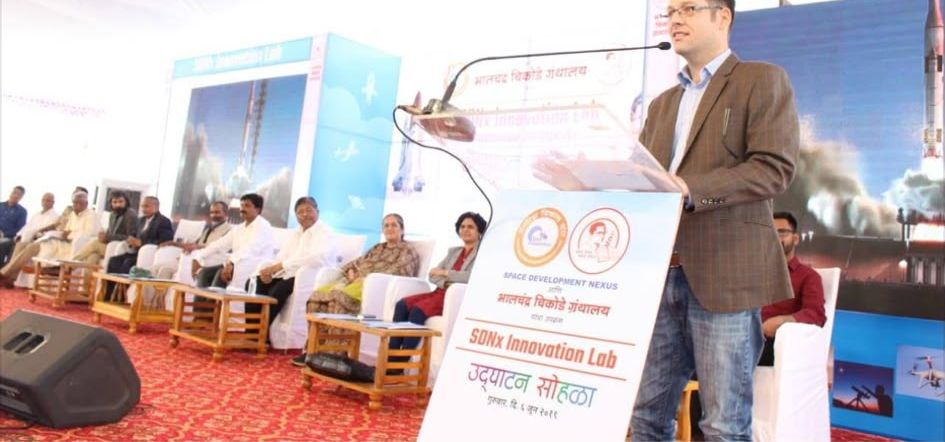
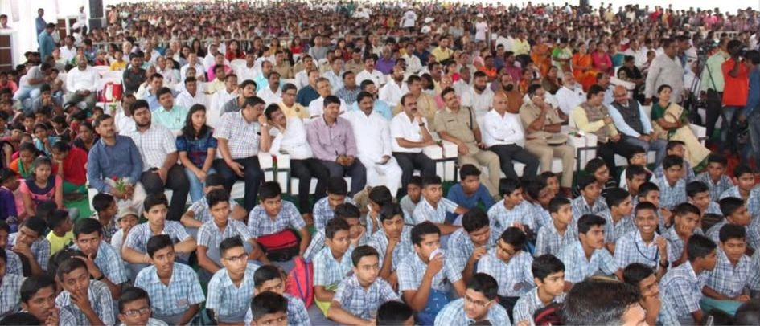
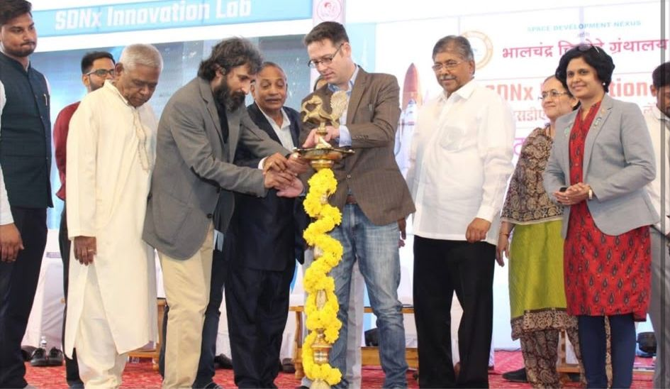
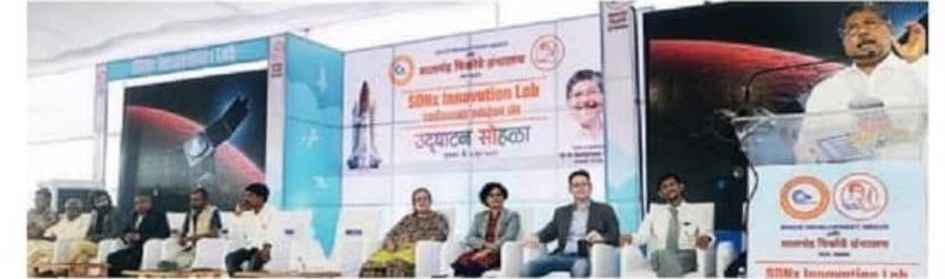
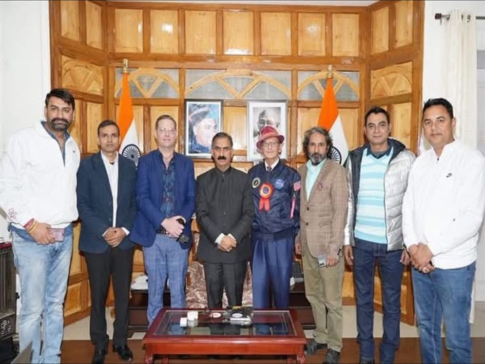
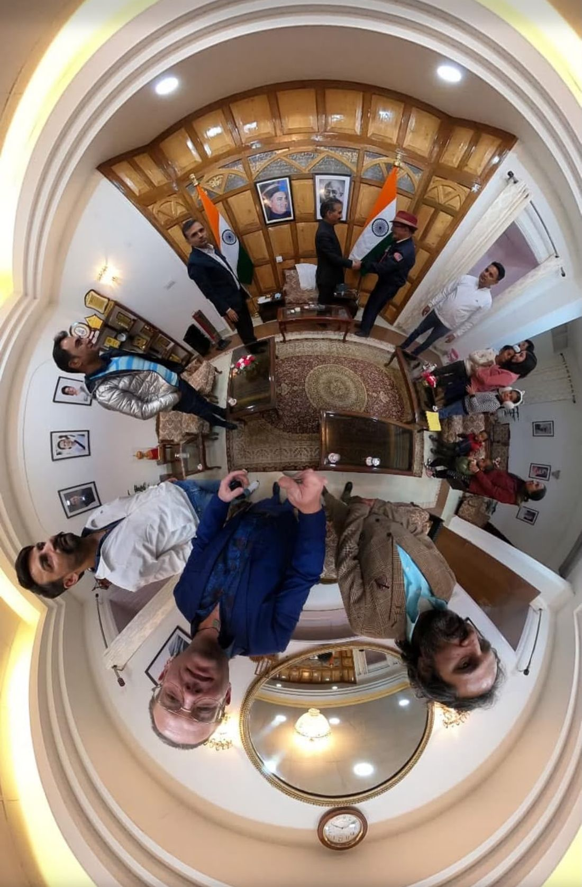

One question runs through this site: assume getting there is solved by someone else, so what would you send to each of the two hundred or so moons and planets we know by name, and why? That question was first put to a field of students in Kolhapur, Maharashtra, in 2019. This page is the record of that day, and of the work around it.
A note on the people in these photographs. They were present at public events; several are senior public figures, scientists and organisers in their own right. Their presence records what happened on those days. None of them endorses this project, and nothing here should be read as their work, their position or their approval.
Kolhapur, June 2019
The SDNx Innovation Lab was inaugurated at Nirman Chowk, Kolhapur, on 6 June 2019, established by Space Development Nexus with the Bhalchandra Chikode Library. The lab was set up to take two hundred students in its first year across twelve projects in aerospace, space robotics and automation.

The talk itself. The gist: imagine and design the satellite sensor packages that would monitor and measure the two hundred most interesting objects in the solar system, on the assumption that the space industry solves the transport and the cost of getting them there. Every model on this site is an attempt to answer that properly.

The audience the question was for. After the ceremony, model rockets, drones and aircraft flew from the field. Those students would be in their twenties now.

The lamp lighting. Among those present: Chandrakant Patil, then a Maharashtra cabinet minister, as chief guest; T. K. Sundaramurthy, former ISRO project director; A. M. Varaprasad, former DRDO scientist; the nuclear scientist Shivram Bhoje; SDNx founder and chairman Sanjay Rathee; Rahul Chikode of the Chikode Library; Anjali Patil; space educator Apoorva Jakhadi; Govind Yadav; Milap Mukherjee; and Luke Nathan Hayes.

The stage. Local coverage in Lokmat (Hello Kolhapur, page 3, 7 June 2019) reported the plan for a national student rocket launching centre across a hundred-acre site, with the first launch announced for early October that year.
Shimla, November 2023
Four years later, at the Chief Minister's summer residence in Shimla: a meeting with Sukhvinder Singh Sukhu, Chief Minister of Himachal Pradesh, alongside Dr Kumar Krishen and Space Development Nexus directors. Dr Krishen spent more than four decades at NASA's Johnson Space Center as a senior scientist and lead technologist, represented the centre as principal technologist on the NASA Council on Science and Technology, and holds the NASA Exceptional Service Medal.

The meeting at the summer residence, November 2023.

The same room as a tiny planet: a 360 camera bending the walls and ceiling into a sphere. A fair emblem for a studio about looking at whole worlds at once.
Space Development Nexus
The lab, the student programme and the meetings above are the work of Space Development Nexus and its partners, not of this site. This site is a separate, independent project built years later, which takes that 2019 question seriously enough to try to answer it in working models.